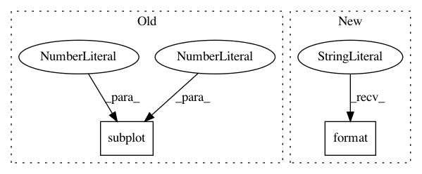

b4db36d337a4ff83f1bcb37c5a8c615d3134d372,examples/covariance/plot_mahalanobis_distances.py,,,#,55
Before Change
plt.yticks(())
robust_mahal = robust_cov.mahalanobis(X - robust_cov.location_) ** (0.33)
subfig3 = plt.subplot(2, 2, 4)
subfig3.boxplot([robust_mahal[:-n_outliers], robust_mahal[-n_outliers:]],
widths=.25)
subfig3.plot(np.full(n_samples - n_outliers, 1.26),
robust_mahal[:-n_outliers], "+k", markeredgewidth=1)
After Change
robust_cov = MinCovDet().fit(X)
// fit a MLE estimator to data
emp_cov = EmpiricalCovariance().fit(X)
print("Estimated covariance matrix:\n"
"MCD (Robust):\n{}\n"
"MLE:\n{}".format(robust_cov.covariance_, emp_cov.covariance_))
// %%
// To better visualize the difference, we plot contours of the
In pattern: SUPERPATTERN
Frequency: 3
Non-data size: 2
Instances
Project Name: scikit-learn/scikit-learn
Commit Name: b4db36d337a4ff83f1bcb37c5a8c615d3134d372
Time: 2020-05-20
Author: jliu176@gmail.com
File Name: examples/covariance/plot_mahalanobis_distances.py
Class Name:
Method Name:
Project Name: IBM/adversarial-robustness-toolbox
Commit Name: fdfb6689c9ce1c9fedddba7a4d03f1ba84c736a0
Time: 2017-07-04
Author: valentina.zantedeschi@ibm.com
File Name: demo/draw_boundaries.py
Class Name:
Method Name:
Project Name: CellProfiler/CellProfiler
Commit Name: f14a72f14d9561bbfa9313e86094122eb98e401c
Time: 2017-02-22
Author: mcquin@broadinstitute.org
File Name: cellprofiler/modules/applythreshold.py
Class Name: ApplyThreshold
Method Name: display